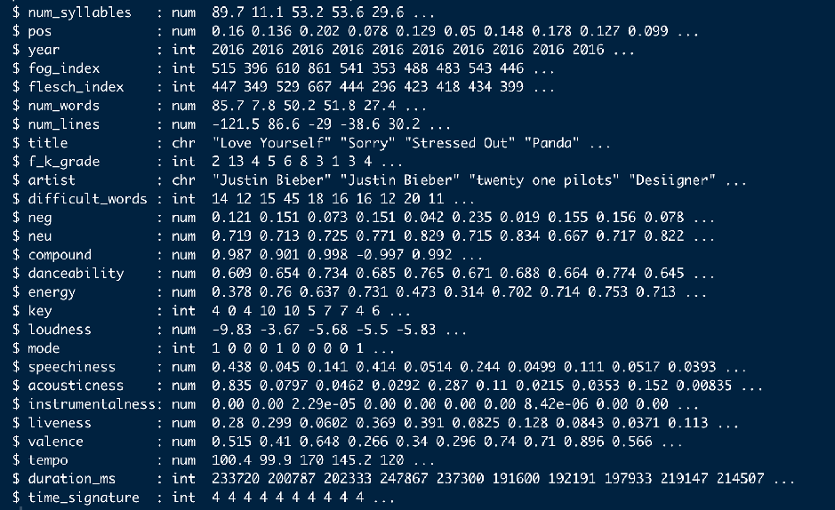
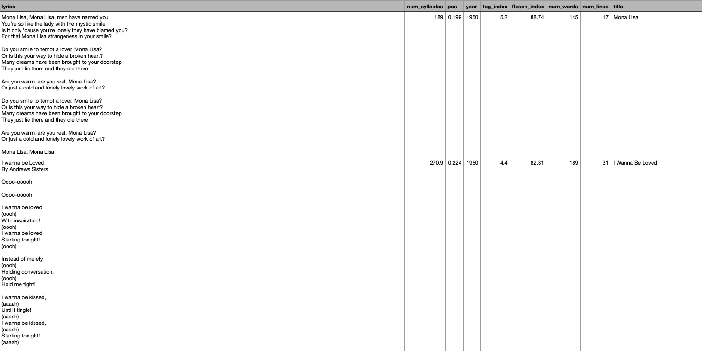
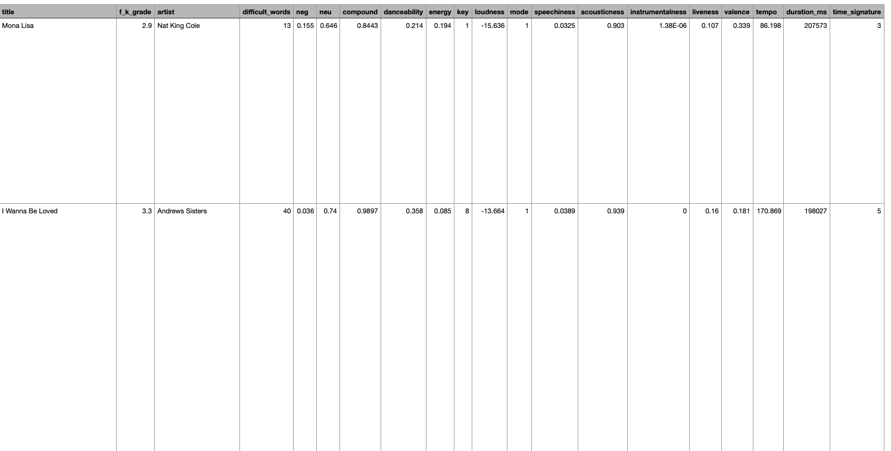
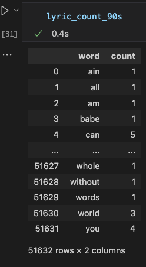

How was the data cleaned and prepared ?
The data cleaning process was done on two seperate files
> Data_cleaning.R: R script focused on cleaning record and labeled data
> Cleaning_data.ipynb: Jupyter notebook focused on cleaning text data (in this case lyrics related data)
Part One: Data_cleaning.R
After the whole data gathering process, i ended up with 2 main datasets, one for songs prior to 2015 and the other
for songs between 2015 and 2021. Before proceeding to the next step which was merging both datasets into one final main
dataset, both had to be cleaned individually to be compatible with each other.
The first thing that had to be done was deleting unnecessary columns like:
> X.1: A useless column that was a byproduct from previous code.
> spotify_id: This variable served its purpose and was of no use from this point on.
> id: A useless column.
> uri: A useless column.
>analysis_url: A useless column.
After having all unwanted columns dropped, it was time to check the data type of each variable, which would be important
at later stages of the project. Running the str() function in R summarizes all this information.

All the data types were correct and as required. The APIs used in the data gathering process of the project could have been responsible for that.
The next step was dealing with missing values,which are present in a couple of entries of the lyrics column.All songs with missing lyrics were
dropped as they are a small number (183) out of all the songs gathered, the absence of these songs would have a very small (if any) effect on the analysis,
which is why they were dropped.
The same data cleaning methods were applied on the old music dataset, and the two datasets were joined together into one final dataset for the Billboard's
Top 100 songs from 1950 till 2021. A brief screenshot of how the final dataset looks like:


Part Two: Cleaning_data.ipynb
As previously mentioned, this notebook mainly focused on dealing with labeled text data (the label in this case is year of song/lyric)
and preparing it in a format that is appropriate for further analysis. Just likeany NLP project (or part of a project in this case), one of the first steps is removing stopwords from text since they provide unnecessary noise. The Python NLTK
package was used to remove these stopwords from all the lyrics. The stop words removed were any word that belongs to the following:
'i', 'me', 'my', 'myself', 'we', 'our', 'ours', 'ourselves', 'you', "you're", "you've", "you'll", "you'd", 'your', 'yours', 'yourself', 'yourselves',
'he', 'him', 'his', 'himself', 'she', "she's", 'her', 'hers', 'herself', 'it', "it's", 'its', 'itself', 'they', 'them', 'their', 'theirs', 'themselves',
'what', 'which', 'who', 'whom', 'this', 'that', "that'll", 'these', 'those', 'am', 'is', 'are', 'was', 'were', 'be', 'been', 'being', 'have', 'has',
'had', 'having', 'do', 'does', 'did', 'doing', 'a', 'an', 'the', 'and', 'but', 'if', 'or', 'because', 'as', 'until', 'while', 'of', 'at', 'by', 'for'
,'with', 'about', 'against', 'between', 'into', 'through', 'during', 'before', 'after', 'above', 'below', 'to', 'from', 'up', 'down', 'in', 'out',
'on', 'off', 'over', 'under', 'again', 'further', 'then', 'once', 'here', 'there', 'when', 'where', 'why', 'how', 'all', 'any', 'both', 'each', 'few',
'more', 'most', 'other', 'some', 'such', 'no', 'nor', 'not', 'only', 'own', 'same', 'so', 'than', 'too', 'very', 's', 't', 'can', 'will', 'just', 'don',
"don't", 'should', "should've", 'now', 'd', 'll', 'm', 'o', 're', 've', 'y', 'ain', 'aren', "aren't", 'couldn', "couldn't", 'didn', "didn't", 'doesn',
"doesn't", 'hadn', "hadn't", 'hasn', "hasn't", 'haven', "haven't", 'isn', "isn't", 'ma', 'mightn', "mightn't", 'mustn', "mustn't", 'needn', "needn't",
'shan', "shan't", 'shouldn', "shouldn't", 'wasn', "wasn't", 'weren', "weren't", 'won', "won't", 'wouldn', "wouldn't"
Since the analysis was to be done on a per decade basis, the song lyrics data was split into their respective decades: 1950s, 1960s,
1970s, 1980s, 1990s, 00s, and 2010s. The python count vectorizor was used on each lyric dataset to get the count per word for each song in
its respective dataset, something which was used later in the exploratory stage of the project. Below is an example of the output of
count vectorization.

Finally, this script ended up providing me with the lyrics of Billboard's top 100 songs per decade along with basic vector related properties,
which are essential for text analysis like word clouds.